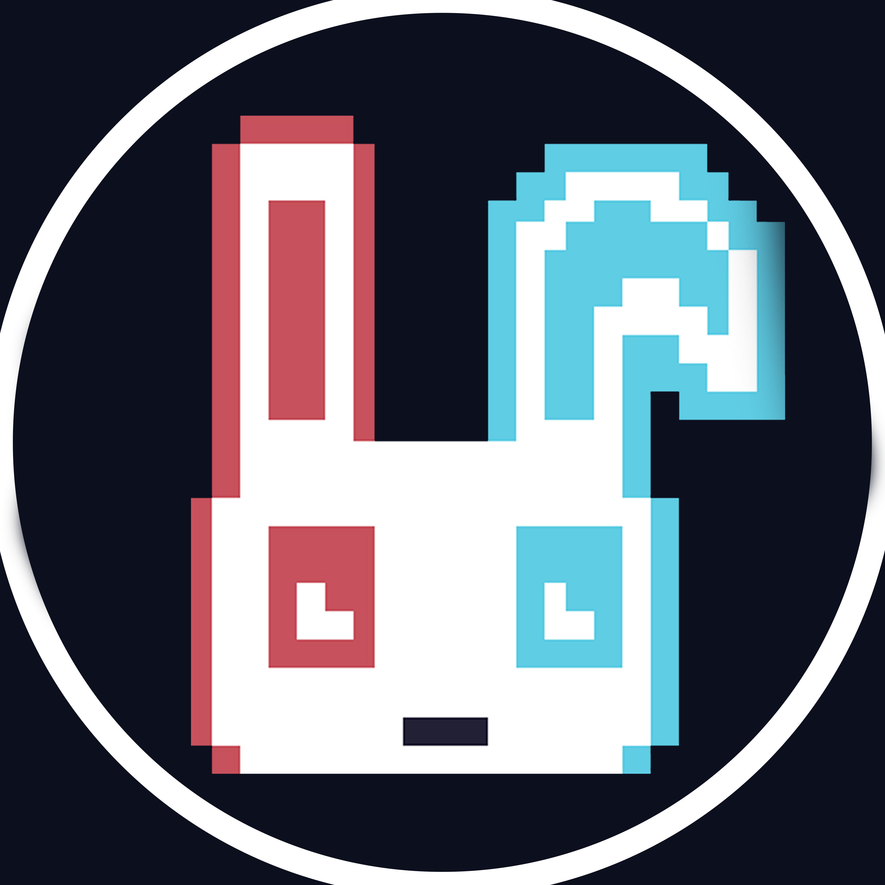

ProGul Game Development_
_
Program Unggulan Game Development adalah wadah belajar dan praktik pengembangan game yang terbuka untuk umum, guna mengembangkan keterampilan dan menghasilkan proyek nyata.

_
Program Unggulan Game Development adalah wadah belajar dan praktik pengembangan game yang terbuka untuk umum, guna mengembangkan keterampilan dan menghasilkan proyek nyata.